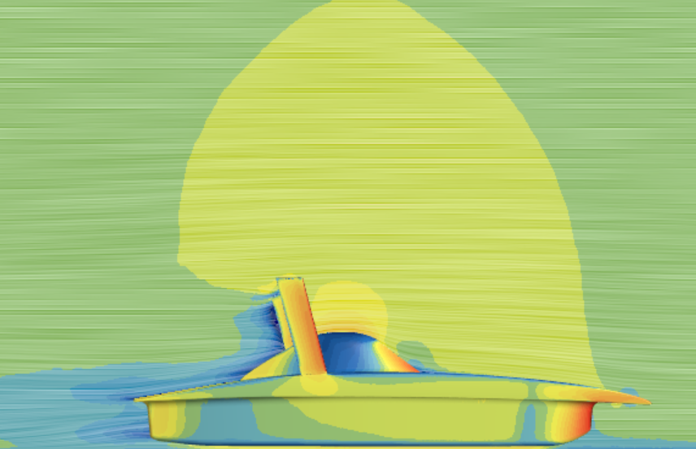

Overview
[Write about the concept, goals, and approach behind this project here.]
[Add more detail, methods, or results here.]
Skills: [Add skills used]
[Add project dates]
[Write a short introduction to the project here — what it is, and what problem it explores.]

[Write about the concept, goals, and approach behind this project here.]
[Add more detail, methods, or results here.]